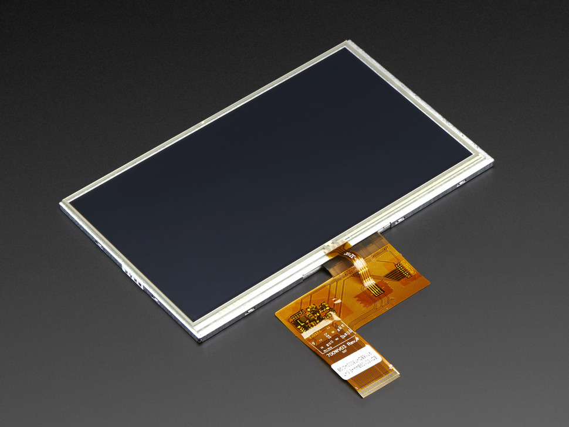
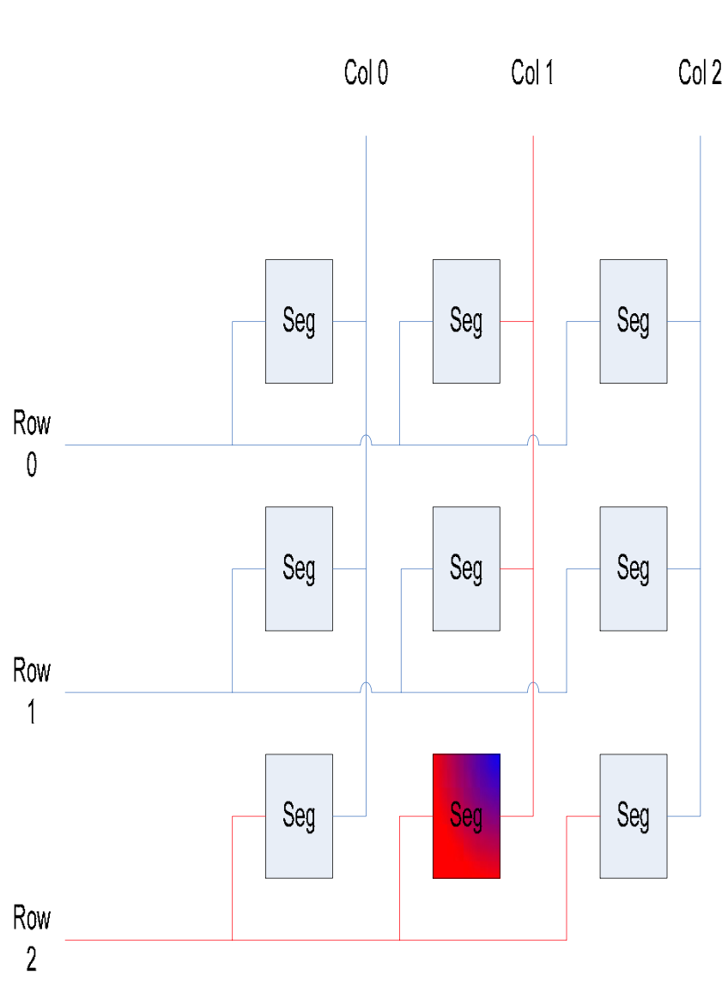
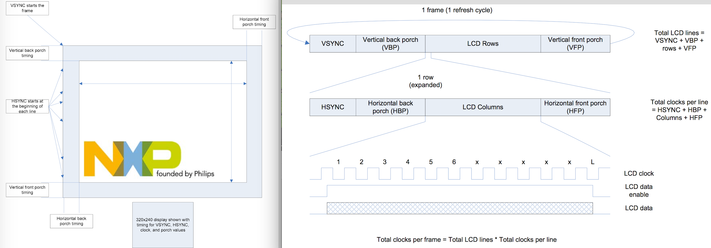
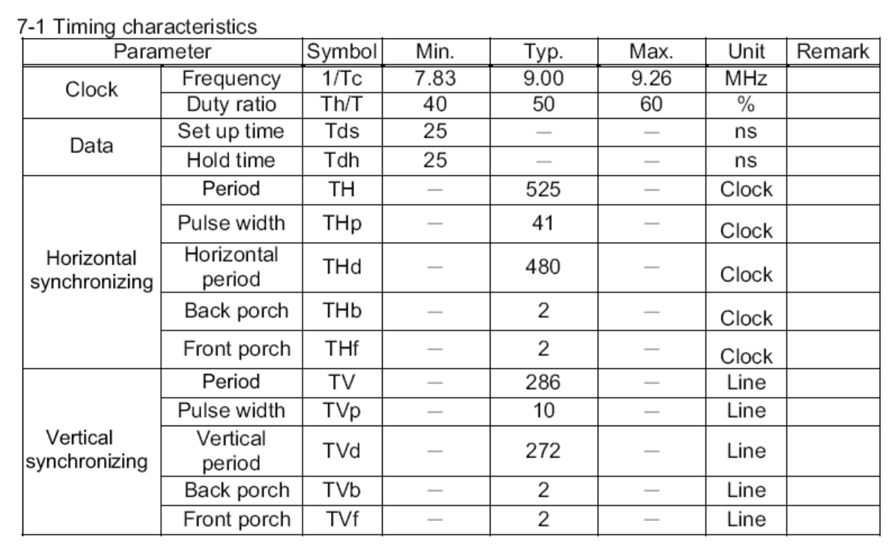
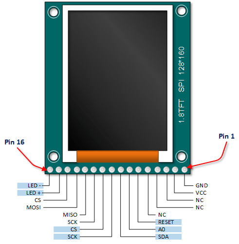

Introduction
Display module
A display module shown in the picture consists a raw pixel-dot-clock display and a display driver chip. The raw displays can have different sizes and materials, such as AMOLED, OLED, TFT and LCD. The display drivers are designed for supporting different raw displays. For example, the ST7735 is a TFT-LCD with maximum 132 * 162 resolution (pixels). The sophisticated processors, such as ARM Cortex-A, have integrated display driver, which means no external display driver is required.
How does an LCD works?
[2]
LCD stands for Liquid Crystal Display, it takes the advantage of the crystal can be moved by electric field. The crystals do not emit light, but they can block light. The crystals can be placed perpendicular to the light source by a proper electric field so that they allow the light that comes from backlight source to pass. A crystal and the component that controls the crystal compose a segment. A pixel consists 3 segment for red, green and blue.
[3]
The TFT display can drive 3 segments (1 pixel) at each time (one clock cycle). And to control a pixel, 24 lines (bits) may be required (The actual number of bits depends on the color level). Therefore, it requires 320 cycle to fully set an 320-pixel display.
The TFT-LCD requires 4 basic timing signals (时序信号): VSYNC, HSYNC, LCDCLK and D0...DXX.
Terms
- VSYNC (Vertical Sync): Used to reset the LCD row pointer to top of the display.
- HSYNC (Horizontal Sync): Used to reset the LCD column pointer to the edge of the display.
- LCDCLK (LCD clock): Used to panel control refresh rate
- D0...DXX(1 or more data lines): transfer RGB value.
Other additional timing signals: LCD power, backlight power, touchscreen.
LCD working timing
LCD display is refreshed row by row from top to bottom. A refresh timing starts with the VSYNC signal. Inside each row, it refreshs column by column from left to right starting with HSYNC. Each LCD clock sets one pixel.
[3]
LCD characters LQ043[3]

Suppose the clock frquency is 9MHz. One cycle is 1/9 us. Refreshing one line is 525 / 9 us. Refreshing one frame is 525 / 9 * 286 = 16683 us. The frequency is 1000,000 / 16683 = 59.9 Hz.
Important parameters of a TFT display
- horizontal sync frequency: frquency of writing a horizontal line.
- vertical sync frequency: frquency of refreshing a frame
- bandwidth:
- dot clock:
ST7735
The Sitronix ST7735 is a single-chip driver/controller for 128x160 pixel TFT-LCD displays. It can accept both serial and 8/9/16/18 bit parallel interfaces, and I2C and SPI serial interface. The ST7735 supports over 50 different commands. Many of these commands fine-tune the power output and color intensity settings, allowing you to correct for LCD display variations.
Breakout Board pinout[1]

Pin discription
| Pin | Meaning |
|---|---|
| Pin16 LED- | GND |
| Pin15 LED+ | 3.3V working voltage |
| Pin10 CS | SPI slave enabling |
| Pin9 SCK | SPI clock signal |
| Pin8 SDA | SPI MOSI |
| Pin7 A0 | ST7735 data/command switching bit. cmd=0; data=1 |
| Pin6 Reset | ST7735 reset pin |